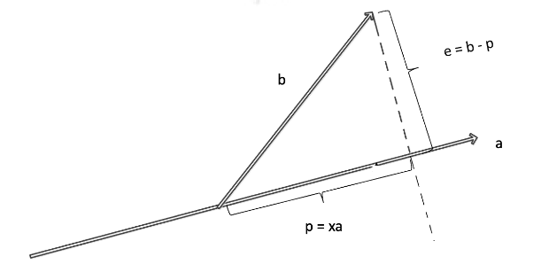
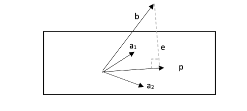
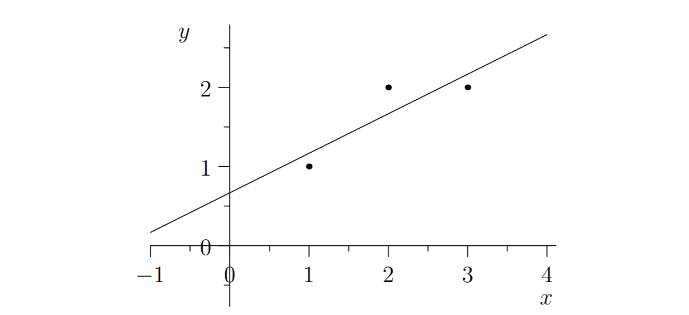

线性代数笔记(十五)——子空间投影
这一讲从向量的投影入手，从二维延展到高维空间，将投影用矩阵形式表示出来。然后回到上一节的遗留的话题：\(A^TA\hat x=A^Tb\)常在工程中被用来求解最优近似解，但并没有解释该解为何为最优，这一节会对此做出解释。
子空间投影
二维空间投影

如图所示，在二维空间中，向量\(p\)就是\(b\)在\(a\)上的投影，即\(p=xa\)，显然他们的差值是\(b-p=e\)，\(e\)与\(a\)垂直： \[ a^Te=a^T(b-p)=a^T(b-ax)=0 \]
代入\(p=xa\)，得到\(p=a\frac{a^Tb}{a^Ta}\)。
可以看到\(p\)的形式中，分母是一个值，而分子中包含了\(b\)，这也就表明投影得到的\(p\)向量是通过前面的系数矩阵作用到\(b\)上完成的，形式上写作：\(p=Pb\)，其中这个系数矩阵\(P\)我们称之为投影矩阵，即\(P=a\frac{a^T}{a^Tb}\)。
这个\(P\)矩阵有两个有取的性质：
- 由前面课程所学的知识，我们知道\(P\)是个对称阵，因此有\(P^T=P\)。
- \(P^2=P\)。
- 由\(P^2=\frac{a(a^Ta)a^T}{(a^Ta)^2}\)，而\(a^Ta\)是内积，化简得到\(P\)。
- 这一点很容易看出来，\(P^2\)相当于对\(b\)在\(a\)上投影得到的\(p\)继续再做一次投影，显然\(p\)在\(a\)上的投影是它本身。
投影的意义
为什么要做投影呢？回到上一节的\(Ax=b\)问题，我们知道\(Ax\)总是在\(A\)的列空间中，但是\(b\)不一定。那么退而求其次，什么样的\(x\)可以最逼近\(b\)呢？换言之，就是让\(b\)的变化能够最小，而变化最小恰恰是通过投影来实现（所以\(e\)被视为误差），投影得到的\(p\)就是\(A\)列空间中最接近\(b\)的那一个。
三维空间投影

延展到三维也并无二致，如图所示，\(a_1\)和\(a_2\)是构成平面的一组基，\(p\)是\(b\)在平面上的投影，\(p\)可以表示为分别投影在这组基的每个向量上的投影和：\(p=\hat x_1a_1+\hat x_2a_2\)，矩阵形式写作： \[ p=A\hat x, 其中A=\begin{bmatrix}a1&a2\end{bmatrix}, \hat x=\begin{bmatrix}\hat x_1\\ \hat x_2\end{bmatrix} \]
此平面即为矩阵\(A\)的列空间，由于\(b\)不在平面上，因此\(Ax=b\)无解，\(A\hat x=p\)中的\(\hat x\)就是最优解。
同样地，有\(e=b-p=b-A\hat x\)与平面垂直(\(A\)的列空间)，因此\(A^Te=0\)： \[ \begin{bmatrix}a_1^T\\ a_2^T\end{bmatrix}(b-A\hat x)=\begin{bmatrix}0\\ 0\end{bmatrix} \]
这与二维投影的\(a^T(b-xa)=0\)并不差别，只不过二维空间的\(A^T\)只有一列罢了。
由\(A^Te=0\)可知，由于列空间与左零空间正交，e一定在\(A\)的左零空间。
化简上式，可得：\(A^TA\hat x=A^Tb\)，而这恰恰就是上一节我们谈及为了解决\(Ax=b\)无解时的工程惯用法式子。至此，我们总算理解了同时左乘\(A^T\)的物理意义。
继续求解，当且仅当\(A^TA\)可逆时，我们可以求出最优解：\(\hat x=(A^TA)^{-1}A^Tb\)。而在上一讲的最后，我们推理出如果\(A\)的各列线性无关，那么\(A^TA\)可逆。
相比于求解\(Ax=b\)，只有当\(A\)可逆时，\(x\)才有解。而在对\(b\)进行了在\(A\)列空间的投影后，求解\(\hat x\)的条件得到了适当的放宽，此时只要求\(A\)的列向量线性无关即可。在实际工程项目中，我们测量得到的\(m\times n\)矩阵常常\(m\)很大，\(n\)很小，因此容易保证。
因此，投影向量\(p=A\hat x=A(A^TA)^{-1}A^Tb\)，投影矩阵为\(A(A^TA)^{-1}A^T\)（二维空间得\(\frac{aa^T}{a^Ta}\)）。
若\(A\)本身可逆，投影矩阵\(A(A^TA)^{-1}A^T\)就可进一步化简，此时\((A^TA)^{-1}\)就可以拆成\(A^{-1}(A^T)^{-1}\)，此时\(A(A^TA)^{-1}A^T=AA^{-1}(A^T)^{-1}A^T=I\)，即得到单位阵。这一结论显然，因为\(A\)若本身可逆，那么\(Ax=b\)就有解，\(b\)本身就在\(A\)的列空间，投影\(b\)到\(A\)的列空间当然得到其本身，此时投影矩阵可不就是单位阵。
最小二乘法
前面也已经提到，投影的方式让我们得到了最优近似解，而\(e\)向量就是其中的误差。实际上这一思想与我们做线性回归时，使用最小二乘法拟合直线的理论基础不谋而合。

对上述直线，我们想通过三个点来拟合一条直线\(y=Cx+D\)，我们将已知的三个点\((1,1),(2,2),(3,2)\)带入方程： \[ \begin{cases} C+D=1\\ 2C+D=2\\ 3C+D=2 \end{cases} \]
写作矩阵形式为： \[ Ax=\begin{bmatrix}1&1\\ 2&1\\ 3&1\end{bmatrix}\begin{bmatrix} C\\ D\end{bmatrix}=\begin{bmatrix}1\\ 2\\ 2\end{bmatrix} \]
显然\(x\)无解，三点根本不共线，于是利用投影找最优近似解。由于\(A\)中各列线性无关，所以\(A^TA\hat x=b\)有解，展开写作： \[ \begin{bmatrix}1&2&3\\ 1&1&1\end{bmatrix}\begin{bmatrix}1&1\\ 2&1\\ 3&1\end{bmatrix}\begin{bmatrix} C\\ D\end{bmatrix}=\begin{bmatrix}1&2&3\\ 1&1&1\end{bmatrix}\begin{bmatrix} 1\\ 2\\ 2\end{bmatrix} \]
矩阵乘法运算得： \[ \begin{bmatrix}14&6\\ 6&3\end{bmatrix}\begin{bmatrix} C\\ D\end{bmatrix}=\begin{bmatrix}11\\ 5\end{bmatrix} \]
亦即： \[ \begin{cases} 14C+6D=11\\ 6C+3D=5 \end{cases} \]
求得：\(C=\frac{1}{2}, D=\frac{2}{3}\)。
微积分解法与投影矩阵的联系
如果用传统微积分来解最小二乘，就需要对误差方程：\(E=(C+D-1)^2+(2C+D-2)^2+(3C+D-2)^2\)求最小值，方程有两个未知数，分别对\(C\)和\(D\)计算偏导的零值： \[ \begin{cases} 2C+2(D-1)+8C+4(D-2)+18C+6(D-2)=0\\ 2D+2(C-1)+2D+2(2C-2)+2D+2(3C-2)=0 \end{cases} \]
化简得到： \[ \begin{cases} 14C+6D=11\\ 6C+3D=5 \end{cases} \]
可以看出这里的两个式子其实和投影矩阵法得到的两个方程一模一样。